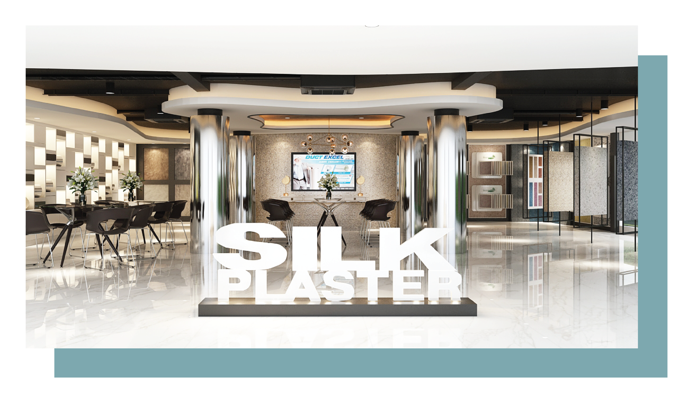
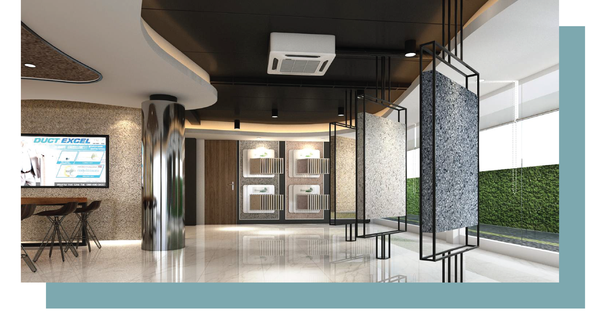

● ตั้งแต่ปี 1997 เป็นเวลากว่า 20 ปี ที่ Silk Plaster ได้ถูกคิดค้น และนำมาใช้เป็นผลิตภัณฑ์ตกแต่งผนังและเพดานด้วยการพัฒนาอย่างต่อเนื่องทำให้ Slik Plaster เป็นวัสดุที่เป็นมิตรต่อสิ่งแวดล้อม 100% ผลิตจากวัตถุดิบที่คัดสรรมาอย่างดี สีสดใส ทนทาน ไม่ซีดจาง
● ปัจจุบัน Slik Plaster ได้รับการรับรองจากองค์กรต่าง ๆ ในยุโรป ทั้งมาตรฐาน CE , AgBB – SCHEME (GERMANY) , EU Declaration of performance (DoP) การทดสอบไฟมาตรฐาน COFRAC (FRANCE) และ M1 EMISSION (FINLAND)

● นอกจากนี้ SliK Plaster ยังได้รับรางวัลด้านคุณภาพความปลอดภัย และเป็นมิตรต่อสิ่งแวดล้อม จากนานาชาติมากมาย อาทิ เช่น งาน BIG 5 , E3 AWARDS 2014 โดยเฉพาะฉลาก “E3 ECOLOGY , ENERGY , EFFICIENCY” ที่เราได้รับจากการประเมินที่เข้มงวด โดยผู้เชี่ยวชาญ
● ด้วยคุณสมบัติและความน่าเชื่อถือ บัดนี้ Slik Plaster ได้มีจำหน่ายในประเทศไทยแล้ว โดยมีวัตถุประสงค์ให้มีทางเลือกในการใช้วัสดุที่มีคุณภาพเป็นมิตรต่อสุขภาพของผู้อยู่อาศัยและสิ่งแวดล้อม ลดการใช้พลังงานไฟฟ้า และคุ้มค่าในแง่ราคา และไม่เป็นการสิ้นเปลืองวัสดุ อีกทั้งยังมีสีและลายให้เลือกมากกว่า 300 สี ช่วยเสริมสร้างจินตนาการและขยายขีดจำกัดในการออกแบบ ซึ่งหวังเป็นอย่างยิ่งว่า วัสดุของเราจะเป็นส่วนหนึ่งในการยกระดับคุณภาพชีวิตของผู้ใช้งานได้เป็นอย่างดี